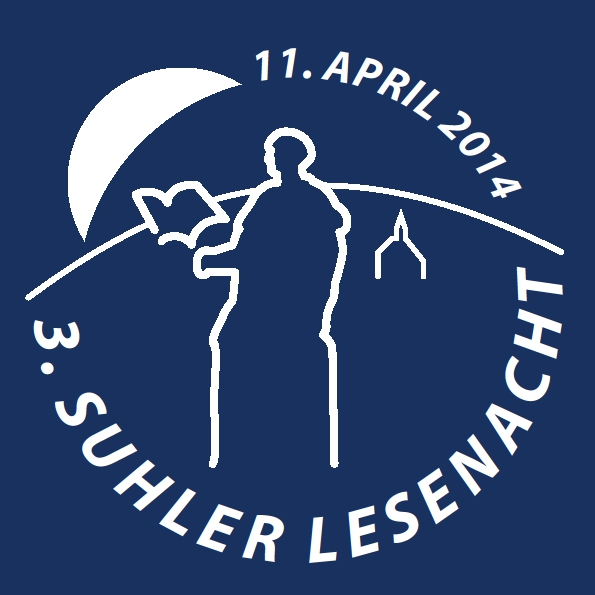
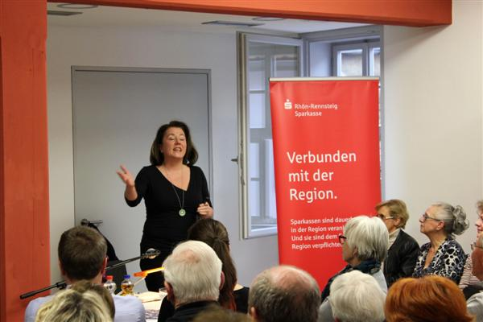
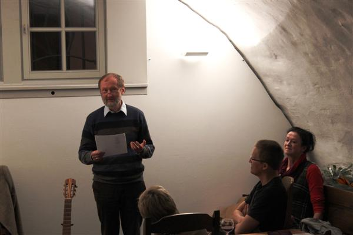
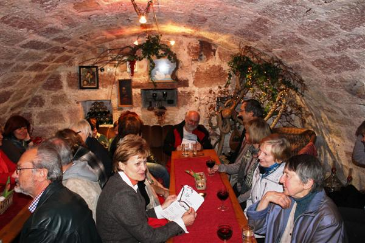
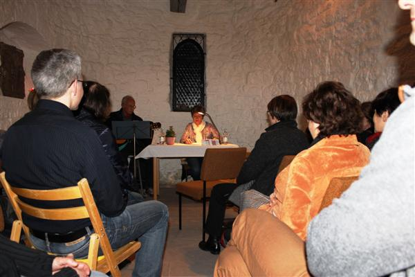

Zum dritten Mal gab es in Suhl am Freitag, dem 11. April 2014, eine große Lesenacht. Insgesamt sieben Autorinnen und Autoren sowie ein Liedermacher stellten dabei ihre Werke vor, diesmal nach dem Auftakt in der Volkshochschule wiederum an fünf außergewöhnlichen Leseorten im Ortsteil Suhl-Heinrichs.
Auftakt mit Frauenpower
Martina Rellin, vormalige Chefredakteurin der Zeitschrift „Das Magazin“, stellte ihre Lesung unter das Motto „L(i)eben Ost-Frauen anders?“ Martina Rellin beantwortete diese Fragen klar mit: „Ja.” Zuversichtlich und risikofreudig, mit Lust und Leidenschaft – so meistern Ost-Frauen ihr Leben und die Liebe. Martina Rellin las im großen Saal des Heinrichser Rathauses und brachte ihn an seine Kapazitätsgrenzen. Das Publikum war begeistert.
Fünf Orte – fünf Lesungen je zweimal
Im Gewölbekeller des Heinrichser Rathauses taktete sich der Vorsitzende des Südthüringer Literaturvereins Holger Uske erstmals als Autor in das Lesenachtgeschehen ein und lud mit Kurzprosa, Gedichten und eigenen Liedern unter dem Titel „Erdfahrt“ die Zuhörer auf eine poetische Reise durch Jahres- und Lebenszeiten ein.
Im Gemeindehaus stellte Heidi Büttner aus Schalkau „Stories an der Countryside“ vor, phantastische und skurrile Geschichten. Sie wurde dabei begleitet vom Bluesmusiker Franz Bätz aus Rauenstein.
Gegenüber der VHS lud der Weinkeller Csutorka zum Verweilen ein. Dort präsentierte der aus Suhl stammende Michael Carl „Worte am Tagrand“, Gedichte und Kurzprosa. Er las Erotisch-Zwischenmenschliches und Nachdenkliches, gewürzt mit einer Prise Humor.
In der Alten Kapelle wurde „Rap für Anfänger“ geboten. Dazu fanden die Zella-Mehliser Autorin Ulrike Blechschmidt und der Suhler Liedermacher Bernd Friedrich zusammen.
Auch der fünfte Leseort in Heinrichs war ein ganz besonderer. In der Salzgrotte boten die aus Südthüringen stammenden Sandra und Sandro Eberwein Kurzprosa und Lyrik unter dem Titel „Flockenwirbel“ - literarische Gedankenspiele zwischen Alltag und Märchen.
Dank der Unterstützung durch die Rhön-Rennsteig-Sparkasse und die Stadtverwaltung konnte der Eintritt frei gehalten werden. Mehr als 150 Interessenten nahmen das Angebot an.





